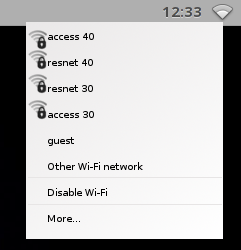
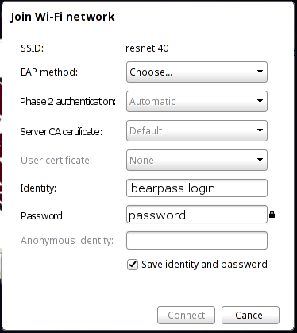

Chrome OS Wireless Setup
- Select the wireless icon in the righthand corner.

- Choose "resnet 40" from the list of available networks.

- When the above window appears, enter the following information:
EAP method: PEAP
Phase 2 Authentication: Automatic
Server CA certificate: Default
User Certificate: None
Identity:Your BearPass Login
Password: Your BearPass Password
Leave the "Anonymous Identity" field blank.
- Once the information has been added, click "connect".
- Congratulations! You should now be able to access the Internet.